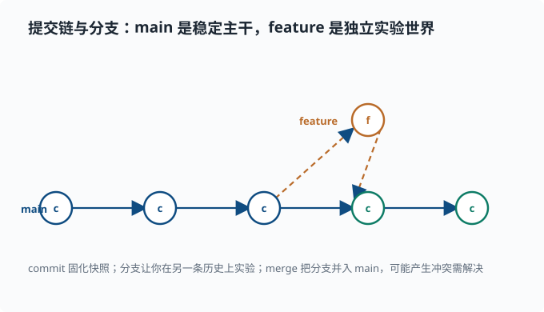

版本控制：Git 基础
目标：让"改坏了能回滚、写错了能追溯、多人能协作"成为本能。读完这一页，你能理解仓库/提交/分支/暂存区的关系，熟练完成提交、查看历史、回滚分支、解决合并，并理解为什么 .gitignore 与 lockfile 如此重要。
为什么先学 Git
写代码一定会改：今天这句对，明天你想试验另一版。如果没有版本控制，你只能靠复制文件（final_v2.py、final_v3_final.py）——迟早崩溃。Git 让你放心地改：每次改动都留下可回退的快照，还能在独立分支上试实验，不影响主线。
一个关键心态：
Git 记录的不是"文件的当前状态"，而是一串提交（commit）——每个提交是某一时刻整个项目的一次快照，附带作者、时间、消息和父提交。
三个核心区域
理解 Git 最关键的是三个状态区域：
工作区 working dir → 暂存区 staging → 仓库 history
你编辑的文件 git add 之后 git commit 之后
- 工作区：你正在编辑的文件。
- 暂存区（索引）：
git add把改动"登记"进来，准备打包成提交。 - 仓库历史：
git commit把暂存区的内容固化成一个不可变的快照。
日常流程：
git status # 看当前哪些文件改了/新增了
git add file.py # 把 file.py 加入暂存区
git commit -m "msg" # 把暂存区固化成一次提交
git log # 查看提交历史
git status 永远是你第一个该敲的命令——它告诉你"我现在在哪、有什么未提交的改动"。
一次完整的小循环
# 初次在一个目录里启用版本控制
git init
# 改了一些代码后
git add src/ readme.md
git commit -m "实现向量化内积"
# 看历史
git log --oneline
提交消息要有意义：说明"做了什么改动、为什么"，而不是"改了一下"。好的提交是一份项目自己的历史档案。
分支：并行世界
分支让你能在不影响主线的独立"世界"里试东西。想象 main 是稳定的主干，你在 experiment 分支上实验：
git branch experiment # 创建分支
git checkout experiment # 切到该分支
# 或一条命令：
git switch -c experiment
切到别的分支时，工作区会变成该分支的内容。在你自己的地方反复实验、提交，最后合并回主线：
git switch main
git merge experiment
如果两个分支改了同一处，Git 会报冲突（conflict）。冲突时编辑文件、解决后 git add 再提交。
分支的价值：让"尝试"零成本。在 agent 工程里，"换个方案试一下"最自然的方式就是开分支，不污染主线。
把"主干 + 实验分支 + 合并"画成一张提交时间线，结构就清楚：main 是一串向后衔接的提交，feature 从某个点分出、改完再并回 main。

每颗圆点是一次 commit；实线是 main 主干，虚线箭头是 feature 从主干流出又并入。merge 之后，feature 上的改动就并进了主干历史，而那条分支本身可以留着、也可以删掉。
想在自己的仓库里亲眼看到这张图，用：
git log --graph --oneline --all
--graph 让 Git 在文字里画出提交之间的分叉与合并线，--oneline 压缩成每提交一行，--all 把所有分支都画进来。做过几次分支实验后跑一遍它，上面这张示意图就会在你的终端里"活"过来。
用 gitGraph 语法也能直接画出同样的时间线（docsify 的 Mermaid 支持）：
gitGraph
commit id: "c1"
commit id: "c2"
branch feature
checkout feature
commit id: "f1"
commit id: "f2"
checkout main
merge feature
commit id: "c3"
查看与回滚
git diff # 未暂存的工作区改动
git diff --staged # 已暂存但未提交的改动
git log --oneline # 提交历史
git show <commit> # 看某次提交改了什么
回滚要分清楚两种情况：
- 还没提交：
git restore file.py丢弃工作区对某文件的改动（回到最近提交）。 - 已经提交：
git revert <commit>生成一个"撤销该提交"的新提交，保留历史，可追溯，是安全做法。
git restore broken.py # 丢掉未提交的改动
git revert abc123 # 安全撤销某次已提交的改动
关键警告：git reset --hard 会不可逆地丢弃工作区改动，务必极其谨慎，初学阶段尽量不用。
.gitignore：哪些不该进版本库
不是所有文件都该提交。生成物、密钥、缓存、大数据通常要排除：
# .gitignore 示例
node_modules/
__pycache__/
.venv/
*.log
.env # 密钥，绝不要提交！
results/
尤其 .env 常含密钥，绝不能进 git。lockfile 则相反，恰恰应该提交——它锁定依赖版本，保证别人安装一致。
与远端协作（GitHub 等）
本地分支要推到远端、把远端改动拉回来：
git remote add origin <仓库地址>
git push -u origin main # 第一次推送并记住对应关系
git pull # 拉取远端改动
git clone <地址> # 把远端仓库完整复制到本地
协作的基本循环：
git pull # 先同步远端
# 改代码、add、commit
git push # 推送我的提交
协同的常见流派：
- 主干开发：直接小步提交到
main（主干就是主线分支），团队小或自动化强时简单。 - 分支 + PR（Pull Request，拉取请求）：每个改动开分支，提 PR（本质是"请仓库主人审查并拉取我的分支"的正式请求，页面上可以逐行评论、讨论）评审后再合并。deepseek-harness 等中型项目基本用这种方式，保证代码经过 review 和 CI（持续集成——每次推送自动跑构建与测试的流水线，改动有问题立刻报警）。
深挖：
git log --graph --oneline --all是看分支结构的第一命令，但有些场景更好用：git branch -vv看每个本地分支跟踪哪个远端分支、git log main..experiment只看"experiment 比 main 多出的提交"。读别人的仓库时，先用这几个命令建立"分支地图"。
一个常见误区
"我 commit 了但 push 了没有？" commit 只落到本地仓库，push 才同步到远端。两者是分开的两步。git status 和 git log 能帮你确认当前真正在哪、推进了多少。
动手：在你的实验上走一遍
假设你在写一个 agent 实验脚本：
git init
git add experiment.py requirements.txt
git commit -m "初始实验：随机基线"
git switch -c add-planning
# 改 experiment.py 加入规划步骤
git add experiment.py
git commit -m "加入规划步骤并固定种子"
git switch main
git merge add-planning
git log --oneline
现在你有了两条提交历史，可以随时 git show 看哪一步改了什么。
思考题
- 工作区、暂存区、仓库历史分别对应什么 Git 命令？
commit和push有什么区别？- 为什么
.env要进.gitignore，而 lockfile 反而要提交？ - 在另一分支实验后，应该如何把改动带回来？
参考答案
- 工作区是当前编辑但未登记的文件（
git status显示为 modified/untracked）；暂存区是git add后"准备提交"的改动（git diff --staged可见）；仓库历史是git commit固化后的不可变快照（git log可见）。 commit是把暂存区固化成本地仓库的一个提交，只影响本地；push是把本地已有的提交同步到远端仓库。所以 commit 后不 push，远端并没有你的改动。.env含密钥等敏感信息，提交会泄露凭据，必须排除；lockfile 锁定了所有依赖的确切版本，提交后别人才能pnpm install/pip install得到一致的环境，是可复现的关键。- 切回目标分支（通常是
main），用git merge 分支名把实验分支的提交并进来；若产生冲突，解决后git add并提交。也可以开 PR 进行 review 后合并。
下一步
- 想读懂中型 TypeScript 仓库的心智模型 → 02-06 读 TypeScript 仓库。
- 想用 Python 组织研究项目 → 02-07 用 Python 做研究。
- 想建立可复现的纪律 → 02-04 工程习惯。